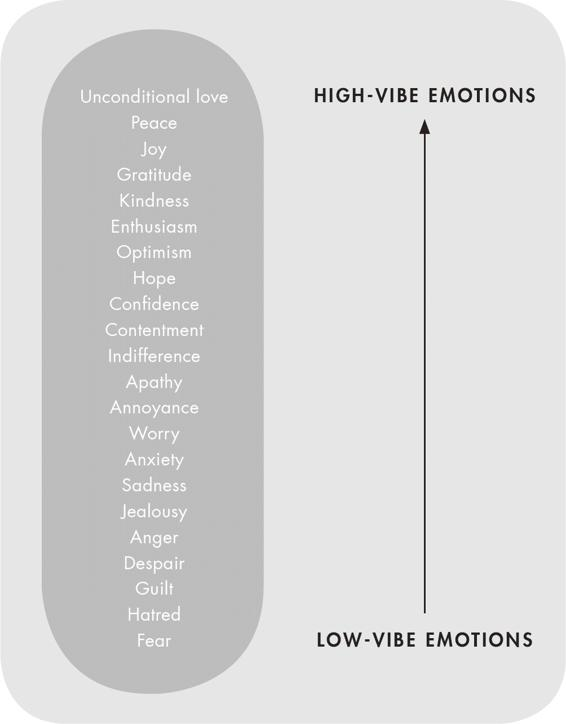

Introduction
TO MANIFEST:
To make something happen
Manifesting is the ability to create the exact life that you want. It is the ability to draw in anything that you desire and become the author of your own story. It looks and feels like magic, and we are all the magicians.
MY MANIFESTING JOURNEY
In May 2018, my life looked entirely different to how it does now. I was twenty-seven years old and I had no idea what I wanted to do with my life; I had no job, no direction and no sense of purpose. I had been in a battle with depression for over a decade, and in the grip of addiction for almost as long. I was overwhelmingly sad for much of the time, my self-worth was non-existent and, after a string of failed relationships, I was very much alone.
I had just returned from Thailand, where I had gone for a month to complete a yoga teacher-training course. I had gone in hope that not only would I get a qualification I could potentially use to assemble some sort of career but also that, in being away from the temptations of city life, I would be able to heal my pain and change my hedonistic, partying ways. But I was back in London for less than twenty-four hours before I found myself in the same old cycle; smoking, drinking and taking drugs. It was then – and not for the first time – that I hit rock bottom. I felt completely hopeless. If not even a month of self-reflection, daily meditation, clean eating and two hundred hours of yoga could help me, what would?
I called my friend Sophia, totally broken. When would I ever feel happy? I asked her. She said to me, ‘I listened to a podcast on something called manifesting last night. I’ll send you the link now, I think it could really help you.’ I was on my way to get a manicure at the time, so I figured that while I sat and had my nails reapplied I may as well just put on my headphones and listen. As I recollect this story now, I have such a vivid image in my mind; I can see myself sitting in the white chair, wearing my black leggings and oversized denim jacket, having my nails painted a candy-coloured pink as I listened intently to something that was about to change my world for ever.
When my nails were done I went straight home and opened up my laptop. I typed into Google, ‘What is manifesting?’ and I sat and read and researched and listened and learned and absorbed everything I could on manifesting. I already knew the first thing I wanted to manifest: unconditional love.
Just one week after listening to that podcast episode and putting into practice some of the things I had learned, I received a message on a dating app called Raya from an Australian actor named Wade Briggs. We had no friends in common, but I thought he looked particularly cute and so I replied, and we quickly began a non-stop texting marathon.
Two weeks later, Wade happened to be stopping in London for four days after travelling through Europe in a van for several months with his best friend, before heading back home to Australia. So we decided to meet up the day after he arrived in the city.
Our date went so well that Wade decided not to get on his flight home so that he could just ‘stay a bit longer and see what happens’.
Three months later, we found out I was pregnant.
On 7 June 2019, exactly one year to the day after receiving his message, our baby boy, Wolfe, was born. There it was: unconditional love.
Three years later, Wade and I are stronger than ever, and totally and utterly obsessed with our perfect little boy. On top of that, I am free of all addiction, I have carved out a successful career for myself which is full of purpose and passion, I am happier and more content than I could put into words and I finally possess something I thought would be forever out of my reach: self-love.
After discovering manifesting, I took everything I learned and, almost instinctively, organized it in my mind into seven simple steps. I started following the steps myself and then everything began to unfold in the most magnificent and rapid way. The change felt so magical, yet at the same time it made so much sense to me that it felt entirely logical, too. My life transformed in every way imaginable; not an inch of it was left the same. And it all happened because of one thing: understanding the true art of manifestation.
I started telling all my friends, and my small following on Instagram, about this incredible thing called ‘manifesting’. Most people had no idea what I was talking about and those that did always said the same thing: ‘Oh, isn’t that when you just visualize what you want and it happens?’ I realized then that the majority of people had never even heard about manifesting, and those that had only seemed to understand the surface layer of it: that was why so few people were successfully doing it.
I felt this urge, a calling within me, to teach as many people as possible how to uncover the power that lies within them. Over the last two years I have shared my 7-step guide to manifesting with thousands and thousands of men and women in my workshops and webinars. I receive daily messages from people who have transformed their worlds and made their dreams come true, thanks to this powerful and magical practice. As we entered 2021, I knew that it was time to write this book, because I knew that I could reach – and teach – so many more people through the written word.
I continue to use manifestation every single day, and I live and breathe the steps I am going to teach you. It serves me in all the best ways and enables me to wake up every single day both grateful for all that I have and excited about what the universe is going to bring to me.
Since starting my workshops, I have seen a rise in interest in manifesting, and this interest has certainly been gaining momentum. It has been so exciting to see more and more people opening their minds to the idea that they are in charge of their destiny, but, for many people, the amount of information can be overwhelming and it can be hard to know where to begin. Within this book, I have streamlined everything you need to know into 7 simple steps so that you can unlock the magic for yourself and begin your journey to manifesting your dream life.
I want to say this, though, loud and clear: manifesting is so much more than just a trend. Manifesting is a meeting of science and wisdom; it is a philosophy to live by and a self-development practice to help you live your best life.
Manifesting is not a new concept. William Walker Atkinson introduced the concept of manifestation in his book Thought Vibration or the Law of Attraction in the Thought World, all the way back in 1906. And one of my favourite definitions of manifesting was written in 1937, by journalist Napoleon Hill, in Think and Grow Rich. He said ‘You are the master of your destiny. You can influence, direct and control your own environment. You can make your life what you want it to be.’ Since then, many great philosophers and thinkers have gone on to write about the power of manifesting: some of my favourite teachers include Louise Hay, Abraham Hicks, Wayne Dyer, Eckhart Tolle, Oprah Winfrey and Dr Joe Dispenza.
All these people know something that I now know, too, without any doubt: manifesting works.
THE SCIENCE OF MANIFESTING
I said just now that manifesting was the meeting of science and wisdom. So here is a simplified explanation of the science for you.
Quantum physics has taught us that everything in the universe is made up of energy. We are made up of energy, the chair we sit on is energy and the sky above us is all energy too. In other words, all physical matter is pure energy. What differentiates one thing from another is the vibrational frequency and the density of the atoms it is constituted from. The frequency of the vibration can be high, low or anywhere in between.
The law of attraction states that like attracts like. This means that a high-frequency vibration attracts high-frequency vibrations back to it, and a low-frequency vibration attracts low-frequency vibrations back to it.
Our thoughts, emotions and feelings are all made up of energy, too, and different emotions have different frequencies. When we change our thoughts, we change how we feel and what emotions we experience, which in turn shifts our entire vibrational frequency. We then attract back to us the frequency that we put out. So, if we alter our thoughts, and therefore our emotions, we can alter our vibration and, ultimately, our reality.
Throughout this book, I will use the terms ‘high vibe’ and ‘low vibe’ to describe the high or low frequency of the vibration.

The science of manifesting works in another way, too, that is less about quantum physics and much more about neuroscience. The idea is that we can use neuroplasticity (our brain’s ability to change and form new pathways through growth, learning and experience) to raise our subconscious feelings of self-worth and to override limiting beliefs, while priming our brain to see opportunity and align our behaviour towards our desired goals. As you follow this book, you will learn why all of these things are integral to mastering manifestation.
If you want to learn more about the science of manifesting, I suggest checking out Dr Tara Swart’s book, The Source. Tara is a neuroscientist, fellow manifesting expert and a friend of mine, and in her book she backs up the power of manifesting with cognitive research.
THE UNIVERSE
Whenever I talk about manifesting, I will talk about the universe. For me, it is the universe that holds the power and magic behind manifesting; it holds something greater than our conscious awareness. It is an energetic force that holds within it the infinite abundance of the world.
If, for you, this energetic power is something different, then please feel free to replace ‘the universe’ with your own interpretation at any time throughout the book.
Now, are you ready to unlock your inner power and live your best life?
MANIFEST WITH ROXIE: THE COMMUNITY
One of the most beautiful and wonderful aspects of all my workshops, webinars and group coaching sessions is the community that is built within them. So many online friendships have been born out of my webinars during the 2020 lockdown, and there are countless WhatsApp groups, with hundreds of men and women who have come together after meeting at my events. In these chat groups they support each other, send one another inspirational content and share self-development resources. I honestly can’t describe how happy it makes me to see the community growing in this way.
I know that, as we get older, it is not always easy to meet like-minded people and make new friends which is why I want my platform to really become a space for meeting and connection and encourage everyone on it to do this.
If you want to join the community, come along to one of my webinars or in-person workshops or join the ‘Manifest with Roxie’ Facebook group. You can also use the hashtag #MANIFESTWITHROXIE to share your stories and post about your progress and your manifesting success stories.